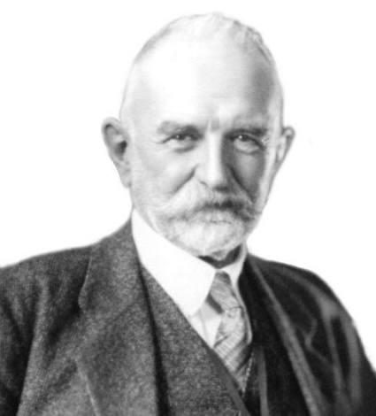
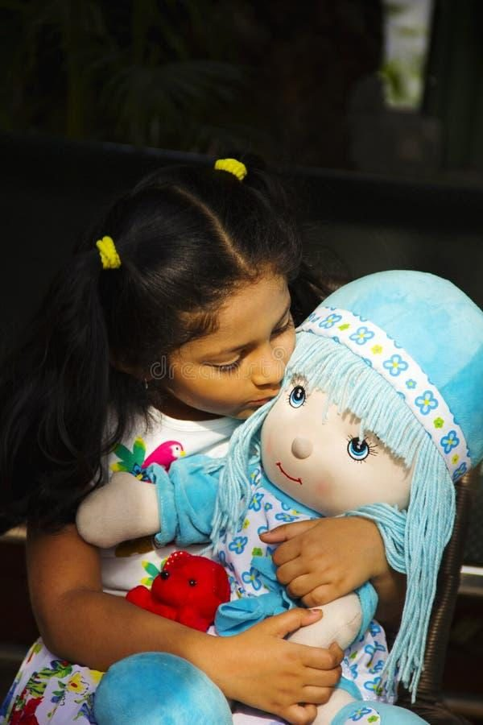
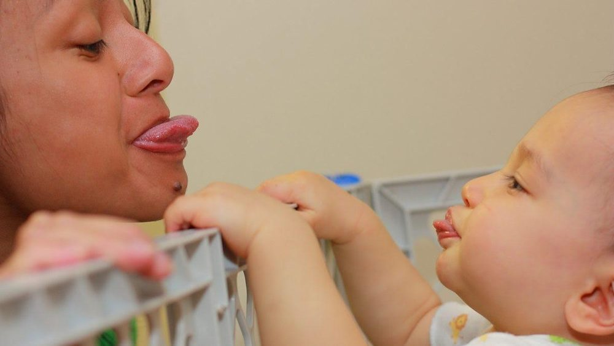

G.H. MeadHigh priority
Mead shows that society lives inside us as the 'me' and changes through the 'I'. Every answer needs the stages and the generalised other.
Chapter map#
- Mead
Self
- Reflexive
- Social product
Stages
- Preparatory
- Play
- Game
Generalised other
- Community attitudes
- Full selfhood
I and Me
- Me: norms
- I: creativity
Symbolic interactionism
- Meanings
- Blumer
Criticisms
- Structure
- Unconscious
- Biology
Exam lens#
The story first#
In simple words#
- The self is reflexive and social: it emerges through interaction, not at birth.
- Three stages: preparatory (imitation), play (significant others), game (generalised other).
- The self has a social 'me' (norms) and a creative 'I' (innovation); self and society are twin-born.
- Mead's ideas are the base of symbolic interactionism (term coined by Blumer). Critics: ignores structure, the unconscious, large-scale change and biology.
| Term | In plain words |
|---|---|
| Self | Capacity to view and evaluate oneself from the standpoint of others. |
| Significant others | Parents, teachers, siblings whose roles children take in the play stage. |
| Generalised other | Organised attitudes, expectations and norms of the wider community. |
| Role-taking | Imagining oneself in the position of another to see how they see you. |
| The 'me' | Internalised attitudes and norms; conformity and stability. |
| The 'I' | Spontaneous, creative response; source of change. |
| Symbolic interactionism | Social life is built from shared meanings that arise in interaction. |
| Mind | The process of thinking, an inner conversation. |
1 · G.H. Mead#


- George Herbert Mead (1863–1931) was an American philosopher and social psychologist closely who taught at the University of Chicago.
- Trained in philosophy and psychology, Mead made a seminal contribution to sociology by developing a social theory of the self and society , emphasizing that individual identity emerges through social interaction.
- Although he did not publish a major book during his lifetime, his ideas were compiled posthumously in Mind, Self and Society.
- Mead is regarded as the founder of the symbolic interactionist tradition , as his work systematically explained how symbols, language, and role-taking shape social action.
- His ideas provided a powerful micro-level alternative to structural and positivist approaches and continue to influence sociology, social psychology, and interactionist studies.
2 · Self and Identity#





- According to Mead, the self refers to the capacity of human beings to view, analyse, and evaluate themselves from the standpoint of others .
- The self is essentially reflexive, meaning that the individual can become both the subject and the object of his own awareness.
- This reflexivity distinguishes humans from animals and inanimate objects.
- The self is not innate. Infants or specific body parts do not possess a self.
- The self emerges gradually through social interaction .
- The self develops only in society. As individuals grow and interact with others, they acquire the ability to see themselves as others see them, thereby forming a self-concept.
- Mead explained that the self develops through a sequence of stages during socialisation:
- 1. Preparatory Stage: From birth to around 2–3 years of age, children imitate the gestures and actions of others without understanding their meaning.
- These imitative acts are mechanical and do not yet involve role-taking or self-awareness.
- An infant imitating his mother Play Stage: Between approximately 2–3 and 5–6 years, children begin to engage in play-acting.
- They take on the roles of significant others such as parents, teachers, or siblings.
- Through role-play, children become aware of the distinction between themselves and the roles they enact, thereby beginning to develop a sense of self.
- A girl child plays with a doll. She acts like her mother while doing so.
- 2. Game Stage: From around 5–6 years onwards, children participate in organised games involving multiple players and formal rules.
- At this stage, they develop the concept of the generalised other, which represents the organised set of attitudes of the wider community.
- The child learns to see himself from the collective standpoint of others, and it is at this stage that full selfhood is attained.
- Children playing the game of cricket. We develop a ‘self’ during this stage The concept of the generalised other is central to Mead's theory of self-development.
- It refers to the organised set of attitudes, expectations, values, and norms of the wider community.
- By internalising the perspective of the generalised other, individuals learn to evaluate their own behaviour according to socially accepted standards.
- The self emerges when an individual can view himself from the standpoint of the larger community rather than merely from the perspective of particular significant others.
- Thus, the development of self is inseparable from the internalisation of the generalised other.
- Through participation in complex social situations, individuals learn to evaluate their own behaviour from others’ perspectives, which enables coordinated social life.
- The self is thus, fundamentally a product of socialisation.
- However, the self is dynamic and ever-evolving , changing throughout one’s life as social interactions change.
- The self continually evolves throughout life during social interaction situations through the process of role-taking.
- In social interaction situations, the individual takes up the role of the counter actor or counteractors to assess how they perceive him.
- Self is therefore shaped by what an individual thinks others think of him.
- Role-taking involves imaginatively placing oneself in the position of others to understand their expectations and meanings.
- Through role-taking, individuals learn to observe themselves from others’ viewpoints.
- Mead argued that the self can develop only when an individual can treat himself as an object, which requires the ability to adopt the perspective of others.
- Unlike deterministic theories of socialisation, Mead argued that individuals are active participants in their own socialisation.
- Through role-taking, interpretation, and interaction, people not only absorb social norms but also actively construct their self.
- Communication and Symbolic Interactionism Mead distinguished between conscious and unconscious communication in social interaction.
- Conscious communication takes place through the exchange of significant symbols, especially language.
- A symbol becomes significant when it evokes the same response in the person using it as it is intended to evoke in others.
- Language provides a shared system of meanings and is central to human interaction.
- Symbols are central to human interaction.
- According to Mead, symbols do not merely stand for objects but define them in particular ways and suggest appropriate responses.
- Symbols are socially created and derive their meaning from shared understanding.
- Language, as the most complex symbolic system, enables communication, thought, and social organisation.
- Unconscious communication occurs through gestures, facial expressions, and body language, often without deliberate intention.
- For Mead, conscious communication through the exchange of shared symbols is the more deliberate and decisive form of communication in human societies.
- Human social interaction is through the exchange of symbols Mead’s ideas form the basis of symbolic interactionism, a term later coined by his student Herbert Blumer.
- Symbolic interactionism emphasises that social life is constructed through shared meanings arising from interaction.
- The symbolic interactionist perspective rests on three core assumptions:
- 1. Individuals act toward objects and people based on the meanings they attach to them.
- 2. These meanings arise out of social interaction.
- 3. Meanings are not fixed and are continually modified in interaction situations.
- The ‘I’ and the ‘Me’ Mead conceptualised the self as consisting of two interrelated components: the ‘I’ and the ‘Me’.
- The ‘me’ represents the internalised attitudes, expectations, and norms of society.
- It reflects the organised set of responses to generalised others.
- The me embodies social control within the individual, and promotes conformity and stability.
- The ‘I’ represents the spontaneous, creative, and unpredictable response of the individual to societal expectations.
- It is the source of innovation and change and is never fully controlled by society.
- Social life is shaped by the continuous interaction between the ‘I’ and the ‘Me’.
- Mind, Self, and Society In Mead’s writings, mind refers to the process of thinking, which he defined as an inner conversation.
- Contrary to conventional thinking that viewed mind as producing self and society, Mead argued for a reciprocal relationship between self and society.
- Self and society are “twin-born”, each shaping and sustaining the other.
- Mead viewed the self as essential to becoming fully human.
- Self-consciousness enables thinking, planning, and deliberate action.
- Thinking is made possible by language and symbols.
- By internalising societal expectations through the generalised other, individuals regulate their conduct and contribute to social order.
- Evaluation of Mead Mead was a pioneer of symbolic interactionist approach .
- Along with C.H. Cooley and John Dewey , Mead is considered one of the founders of the symbolic interactionism.
- The interactionist approach developed by Mead provided a systematic critique of the macro approaches in sociology and also the positivist tradition; by emphasising meaning, interaction, and agency.
- Mead was an important faculty at the University of Chicago, which was the most prominent centre of sociological research at the time.
- He taught and trained some of the finest minds in the symbolic interactionist tradition, including Herbert Blumer.
- The concept of self and the important role played by significant symbols highlighted by Mead constitute the basis for symbolic interactionist writings to this day.
- He not only influenced the discipline the sociology but also psychology and brought the two disciplines closer.
3 · Criticisms of G.H. Mead#
- 1. Structuralists criticise symbolic interactionism for overemphasising the individual agency; and downplaying the role of structural constraints.
- 2. Critics, particularly those of the psychoanalytic traditions, argue that Mead placed excessive emphasis on conscious communication and role-taking.
- Unconscious motives, emotions, and psychological processes may play a much greater role in human behaviour than Mead acknowledged.
- 3. Mead's theory focuses primarily on face-to-face interactions and everyday social situations.
- Critics argue that it pays insufficient attention to broader social processes such as capitalism, globalization, and large-scale social change.
- 4. Mead viewed the self primarily as a social product emerging through interaction.
- Critics argue that he paid insufficient attention to biological, genetic, and innate psychological factors that may also shape personality and behaviour.
- Despite the criticisms levelled against him, Mead remains one of the most influential thinkers in sociological theory.
- His analysis of the self as a social product, emerging through interaction, language, and role-taking, fundamentally reshaped our understanding of the relationship between individual and society.
- Mead’s work laid the intellectual foundations of symbolic interactionism and offered a powerful corrective to deterministic and overly structural explanations of human behaviour.
- Even though his theory underplays structural constraints and unconscious processes, its emphasis on meaning, agency, and everyday interaction continues to provide invaluable insights into social life and remains central to contemporary sociological analysis.
Traps#
| Trap | What goes wrong, and the rule |
|---|---|
| Mead did not coin the label | Symbolic interactionism was coined by his student Herbert Blumer; Mead's ideas formed its basis. Exam-hall rule: write 'Mead's ideas, Blumer's term'. |
| Play vs game stage | Play: roles of significant others. Game: generalised other and full selfhood. Exam-hall rule: significant others = play; generalised other = game. |
| 'I' vs 'Me' | The 'me' is social control; the 'I' is creativity and change. Exam-hall rule: Me = Mould; I = Innovate. |
Recall sheet#
Read once, hide it, then rebuild the chapter from memory.
- Mead's years and university? 1863-1931; University of Chicago
- Which book compiled his ideas? Mind, Self and Society (posthumous)
- What is the self? Capacity to see oneself from the standpoint of others
- Is the self innate? No; it emerges through social interaction
- Three stages? Preparatory, play, game
- Age of the play stage? About 2-3 to 5-6 years
- Generalised other? Organised attitudes of the wider community
- When is full selfhood attained? In the game stage
- What is the 'me'? Internalised social norms; conformity
- What is the 'I'? Spontaneous, creative response
- Who coined symbolic interactionism? Herbert Blumer, Mead's student
- Three assumptions of symbolic interactionism? Act on meanings; meanings arise from interaction; meanings are modified
- Self and society are? Twin-born
- Name a criticism Overemphasises agency; ignores unconscious, structure or biology
Abbreviation column#
| Short form | Full form | One-line meaning |
|---|---|---|
| PYQ | Previous Years' Questions | Questions UPSC has already asked |
| I/5b/10 | Paper I / Question 5b / 10 marks | How the handout labels each PYQ |
Revise#
| Day | What to do |
|---|---|
| Day 0 | Read the Exam lens and the notes; mark the chapter done |
| Day +1 | Recall sheet: read once, hide, rebuild |
| Day +3 | Flashcards: missed ones only |
| Day +7 | Quick quiz; fix each miss against the Traps |
| Day +21 | Write two Mains answers from memory using the skeletons |
| Day +45 | Blank-page test: redraw the chapter map |
Test yourself#
Quick quiz
Flashcards
Tap the card to flip.
Mains answer skeletons
One for each Mains PYQ quoted in the handout. Tap to open; try the answer first.
2024 · 10 marks · Explain G.H. Mead's idea of development of ‘self’ through the ‘generalised other’.
Question. Explain G.H. Mead's idea of development of ‘self’ through the ‘generalised other’.
- Intro: name G.H. Mead and state the central idea in one line (see The story first).
- Body: build the answer from the notes under: Self and Identity.
- Close: finish with the matching criticisms section and a one-line judgement.
2022 · 20 marks · According to Mead the idea of self develops when the individual becomes self-conscious. Explain.
Question. According to Mead the idea of self develops when the individual becomes self-conscious. Explain.
- Intro: name G.H. Mead and state the central idea in one line (see The story first).
- Body: build the answer from the notes under: Self and Identity.
- Close: finish with the matching criticisms section and a one-line judgement.
2020 · 10 marks · Write short note: Mead's notion of self.
Question. Write short note: Mead's notion of self.
- Intro: name G.H. Mead and state the central idea in one line (see The story first).
- Body: build the answer from the notes under: Self and Identity.
- Close: finish with the matching criticisms section and a one-line judgement.
2019 · 20 marks · According to Mead, "We play a key role in our own socialisation." Explain.
Question. According to Mead, "We play a key role in our own socialisation." Explain.
- Intro: name G.H. Mead and state the central idea in one line (see The story first).
- Body: build the answer from the notes under: Self and Identity.
- Close: finish with the matching criticisms section and a one-line judgement.
2018 · 10 marks · Do you think 'I' and 'Me' are central terms in Mead's work?
Question. Do you think 'I' and 'Me' are central terms in Mead's work?
- Intro: name G.H. Mead and state the central idea in one line (see The story first).
- Body: build the answer from the notes under: Self and Identity.
- Close: finish with the matching criticisms section and a one-line judgement.
2015 · 10 marks · "Self and Society are twin - born". Examine the statement of Mead.
Question. "Self and Society are twin - born". Examine the statement of Mead.
- Intro: name G.H. Mead and state the central idea in one line (see The story first).
- Body: build the answer from the notes under: Self and Identity.
- Close: finish with the matching criticisms section and a one-line judgement.
2014 · 10 marks · Using Mead's theory of symbolic interactionism, discuss the stages in the formation of gender identi…
Question. Using Mead's theory of symbolic interactionism, discuss the stages in the formation of gender identity.
- Intro: name G.H. Mead and state the central idea in one line (see The story first).
- Body: build the answer from the notes under: Self and Identity.
- Close: finish with the matching criticisms section and a one-line judgement.
2013 · 20 marks · Critically analyse the contributions of G.H. Mead to 'symbolic interactionism'.
Question. Critically analyse the contributions of G.H. Mead to 'symbolic interactionism'.
- Intro: name G.H. Mead and state the central idea in one line (see The story first).
- Body: build the answer from the notes under: Self and Identity.
- Close: finish with the matching criticisms section and a one-line judgement.